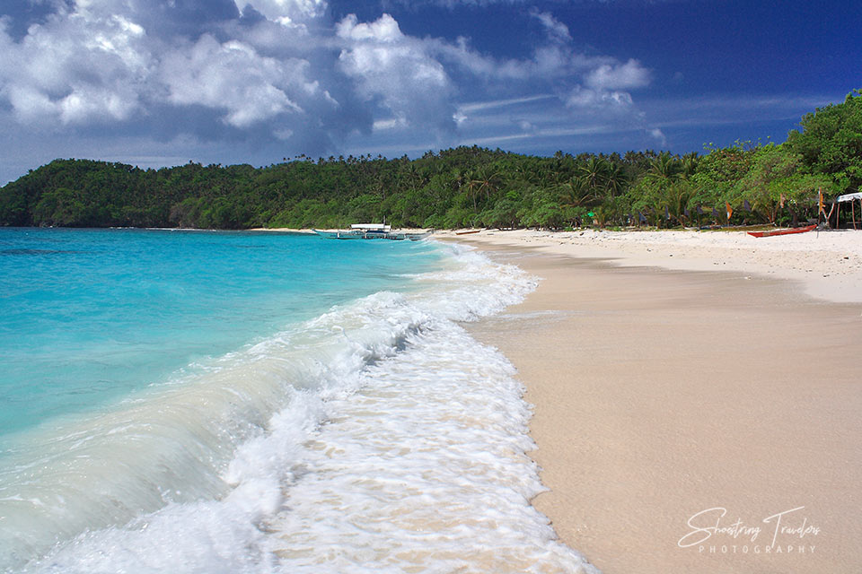
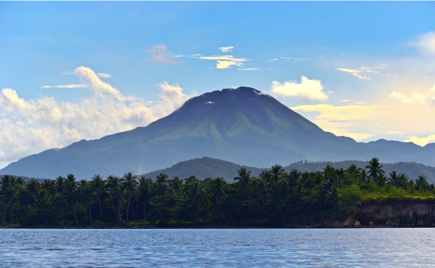

Donsol
Whale Shark Watching
Swim with the world's largest fish in the warm waters of Donsol Bay — one of the most responsible wildlife experiences on the planet.
ExploreSorsogon offers a rare blend of marine adventure, volcanic landscapes, colonial heritage, and authentic Filipino hospitality — all in one compact, accessible province.
Swim with the world's largest fish in the warm waters of Donsol Bay — one of the most responsible wildlife experiences on the planet.
Explore
Subic Beach's volcanic black sand, Punta's surf breaks, and the island-dotted coast of Matnog — a coastline for every taste.
Explore
Trek through lush rainforest, swim in a crater lake, and soak in natural hot springs in this spectacular protected park.
Explore
At dusk, cruise the Ogod River and witness thousands of synchronous fireflies lighting the mangroves in a magical natural display.
Explore
Centuries-old Spanish baroque churches dot the province, each with its own history, art, and architectural character.
ExploreA week-long provincial festival featuring street dances, cultural shows, and trade fairs celebrating Sorsogon's founding.
Explore| Attraction | Location | Best Season | Type |
|---|---|---|---|
| Whale Shark Watching | Donsol | Nov – June | Marine Wildlife |
| Firefly Watching | Donsol (Ogod River) | Year-round | Ecotourism |
| Subic Beach | Matnog | Year-round | Beach |
| Bulusan Volcano Park | Bulusan / Irosin | Year-round | Trekking / Nature |
| Bulusan Lake | Bulusan | Year-round | Kayaking / Nature |
| Kasanggayahan Festival | Sorsogon City | October | Cultural |
| Bacon Church | Sorsogon City | Year-round | Heritage |
| Matnog Island Hopping | Matnog | Mar – May | Island Hopping |